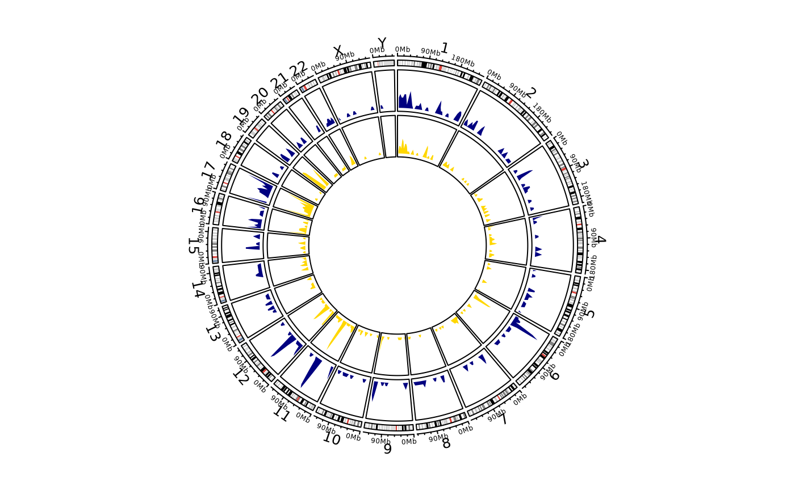

![[Experimental]](figures/lifecycle-experimental.svg) For this functionality
the suggested package
circlize
is required.
Please note that this function is a simple wrapper of basic
For this functionality
the suggested package
circlize
is required.
Please note that this function is a simple wrapper of basic circlize
functions, for an in-depth explanation on how the functions work and
additional arguments please refer to the official documentation
Circular Visualization in R
circos_genomic_density( data, gene_labels = NULL, label_col = NULL, cytoband_specie = "hg19", track_colors = "navyblue", grDevice = c("png", "pdf", "svg", "jpeg", "bmp", "tiff", "default"), file_path = getwd(), ... )
Arguments
| data | Either a single integration matrix or a list of integration matrices. If a list is provided, a separate density track for each data frame is plotted. |
|---|---|
| gene_labels | Either |
| label_col | Numeric index of the column of |
| cytoband_specie | Specie for initializing the cytoband |
| track_colors | Colors to give to density tracks. If more than one
integration matrix is provided as |
| grDevice | The graphical device where the plot should be traced.
|
| file_path | If a device other than |
| ... | Additional named arguments to pass on to chosen device,
|
Value
NULL
Details
Providing genomic labels
If genomic labels should be plotted alongside genomic density tracks,
the user should provide them as a simple data frame in standard bed format,
namely chr, start, end plus a column containing the labels.
NOTE: if the user decides to plot on the default device (viewer in RStudio),
he must ensure there is enough space for all elements to be plotted,
otherwise an error message is thrown.
Examples
# \donttest{ data("integration_matrices", package = "ISAnalytics") data("association_file", package = "ISAnalytics") aggreg <- aggregate_values_by_key( x = integration_matrices, association_file = association_file, value_cols = c("seqCount", "fragmentEstimate") ) by_subj <- aggreg %>% dplyr::group_by(.data$SubjectID) %>% dplyr::group_split() circos_genomic_density(by_subj, track_colors = c("navyblue", "gold"), grDevice = "default", track.height = 0.1 )# }